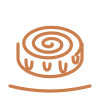
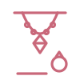
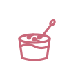
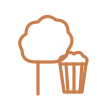

מופע והרקדת ברייקדאנס לילדים · מ-16:30
עמדות משחק ספורטיביות לכל המשפחה
גן שעשועים ודשא פתוח, צמוד לעגלה
סינבוניםשל ללוש
תכשיטיםשל סיקרט
מלבישל מלביהו
צמר גפן מתוקופופקורן אינסטגרם
אינסטגרם פייסבוק
פייסבוק וואטסאפ
וואטסאפ